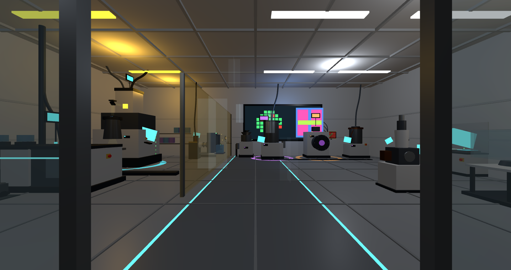
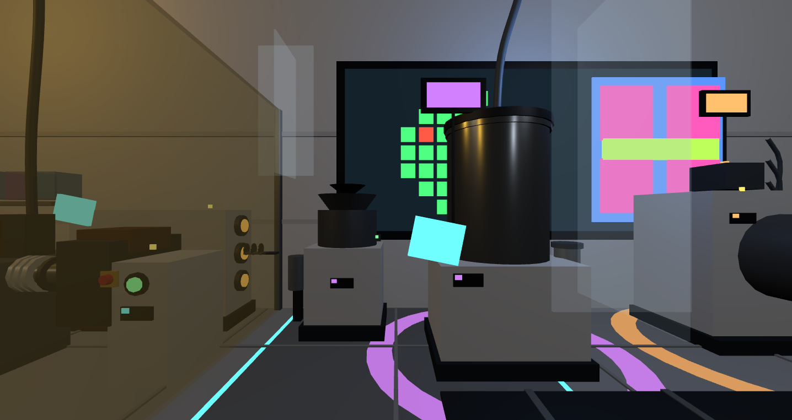
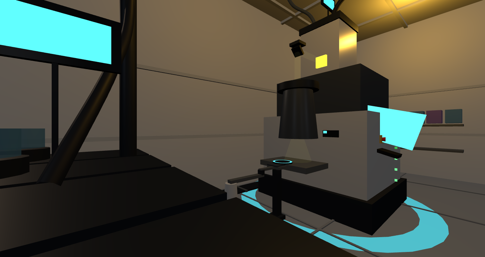
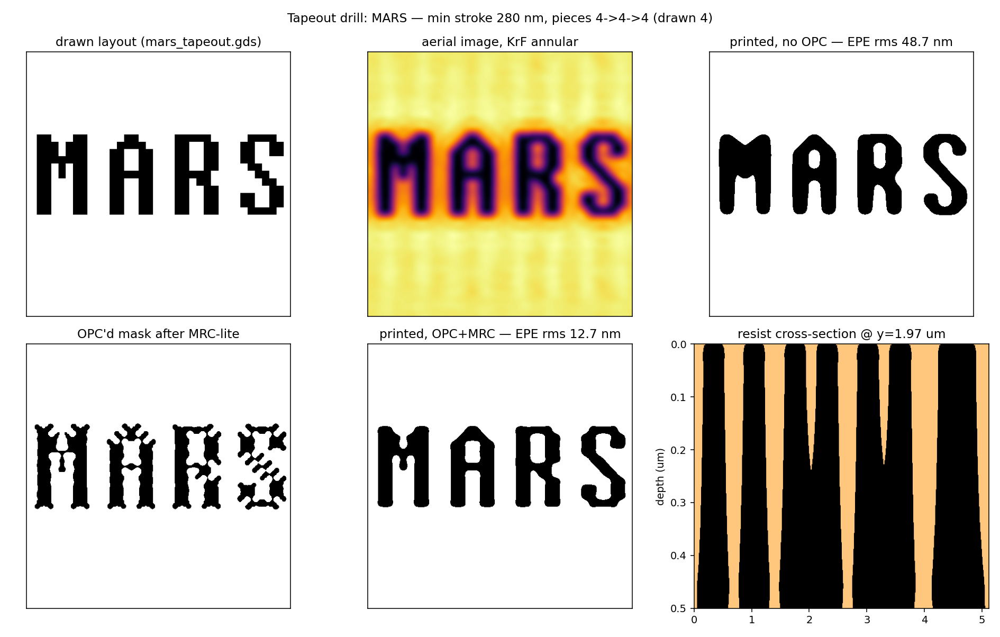

THE CLEANROOM
One fab, three processes — the city's silicon, printed thirty metres underground

Through the door: yellow bay left, HEPA laminar ceiling, guide-lit central aisle, and three tool lines on glowing base rings — cyan for sky130 digital, copper for CRN65LP analog, violet for Josephson superconducting

The v6 wall: LPCVD cold-wall reactor under the DRC convergence dot-screen (5×8 going green) and the MB-1 layout display; AGV guide lanes below

Under the amber light: the stepper — light tower, fold mirror, mask library and a wafer chuck ringed in cyan; resists only ever meet yellow photons

The tapeout drill: a mask that prints MARS — bare EPE rms 48.7 nm, 12.7 nm after OPC+MRC; standing waves and the resist cross-section included

Round 11 — yield beyond Poisson: defects cluster, and clustering forgives; the MB-1 die marked on the compound-cluster law
🏭 Three linesMB-1 bigram ASIC on sky130 · SPAD analog on CRN65LP · QP-20 Josephson junctions — one floor bakes chips for the compute hall, the lidar and the quantum center downstairs
📐 Litho ×8Abbe aerial images → process windows → ILT-style OPC on the real MB-1 clip (EPE 35→6 nm, hammerheads emerged, not drawn) → resist stack, mask-3D on an in-house RCWA solver, and the lens spec derived, then measured in Zemax
📐 Process ×13Deal-Grove oxidation · CMP pattern density on the real die (fill: var 205→176 nm) · step coverage + CD-SEM imaging · dicing chip budget and wedge-bond window close the tool ledger
⚙ The choreographyT = 104 s full-wafer loop: AGV logistics → spin-coat → exposure beam → develop → RIE door and plasma → probe verdicts lighting the wafer map die by die → dicing, every effect phase-gated to its cause
🧪 v6 toolsFurnace with cantilever quartz boat, LPCVD reactor, counter-rotating CMP — the last three ledgers got their hardware; wet bench, CD-SEM, implanter and FOUP interlock already on the floor
🚨 DrillsEMO freezes the whole floor under 8 s of red then resumes without a time-jump; the pass-through window never opens both doors — 12.15k triangles, validate PASS, console clean